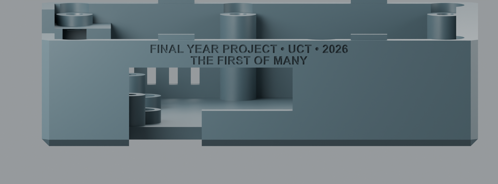
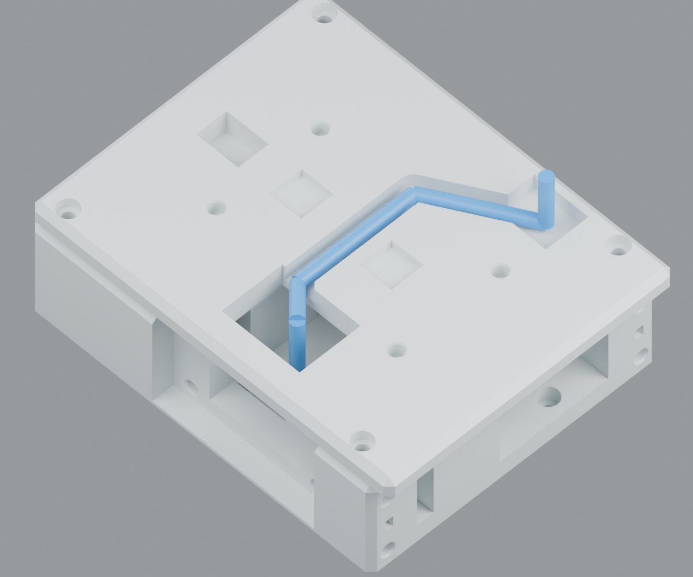
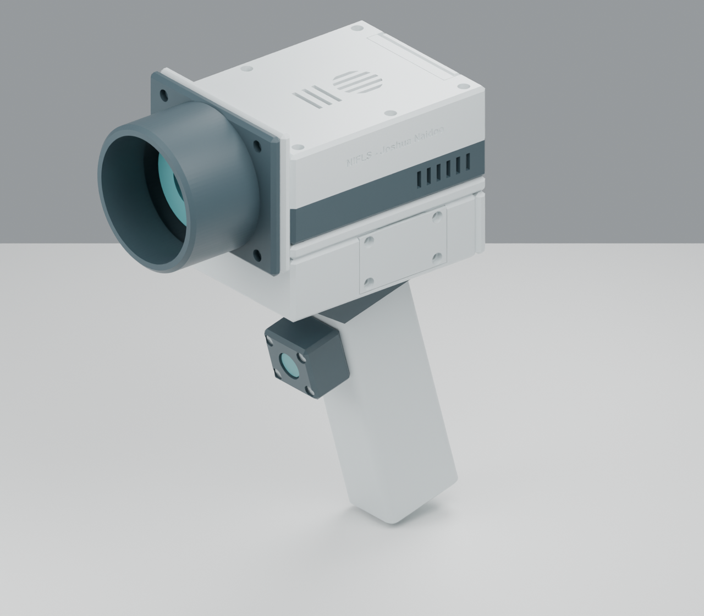
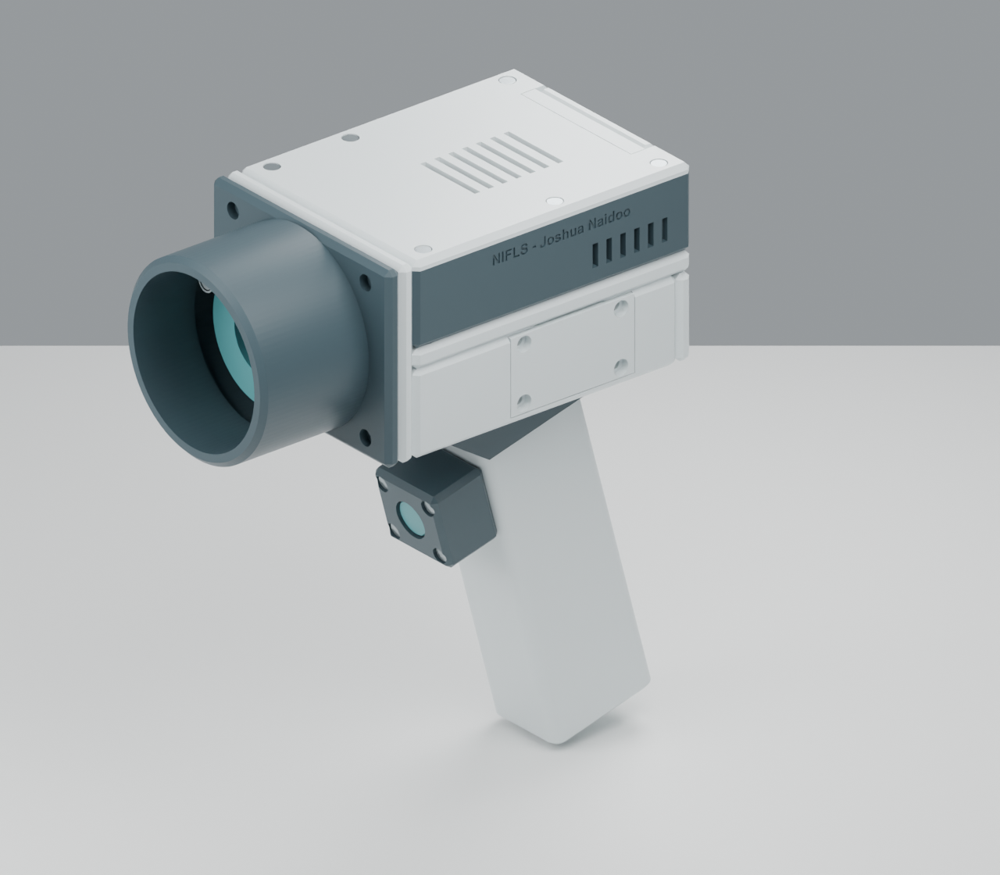
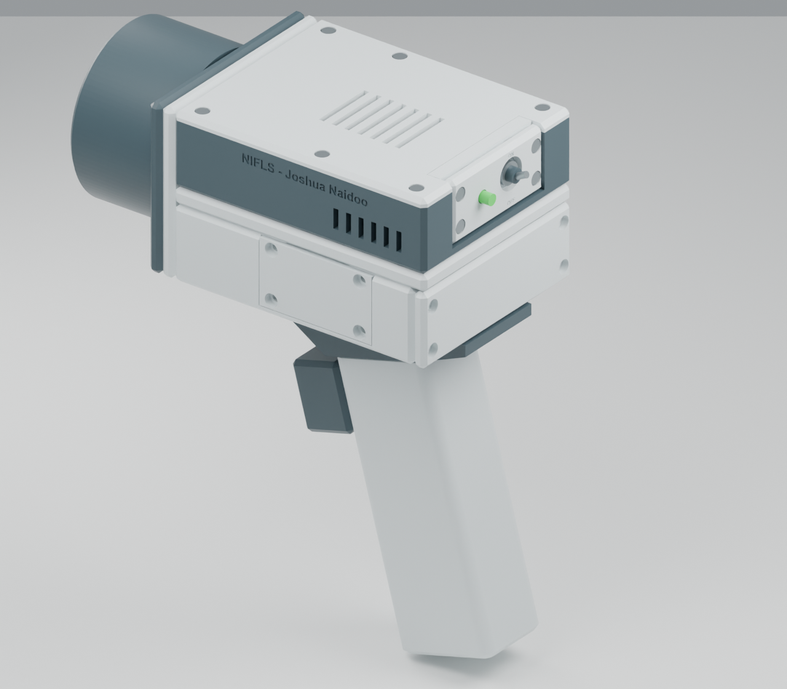
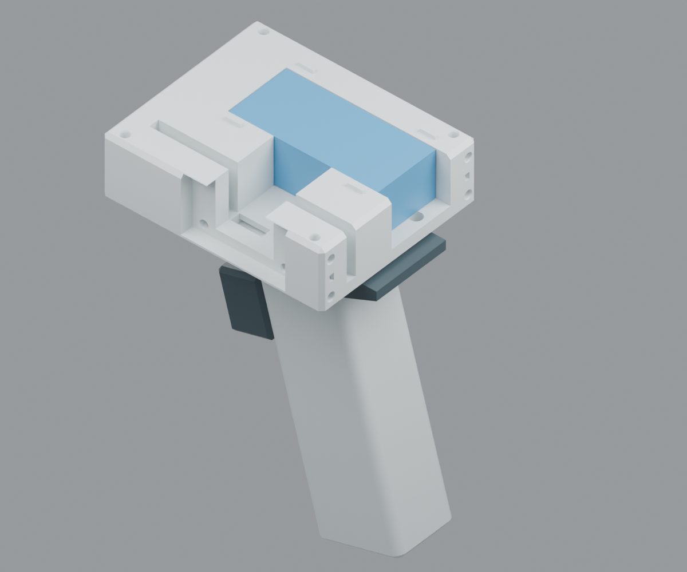
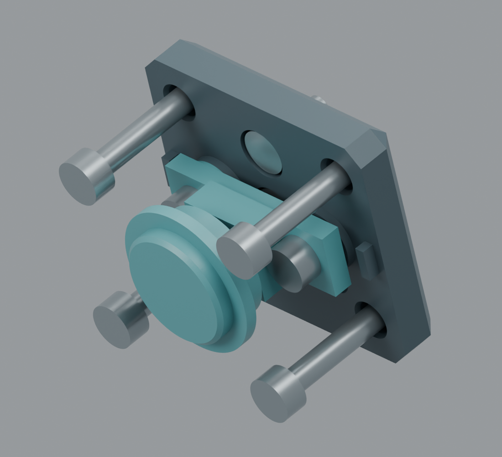
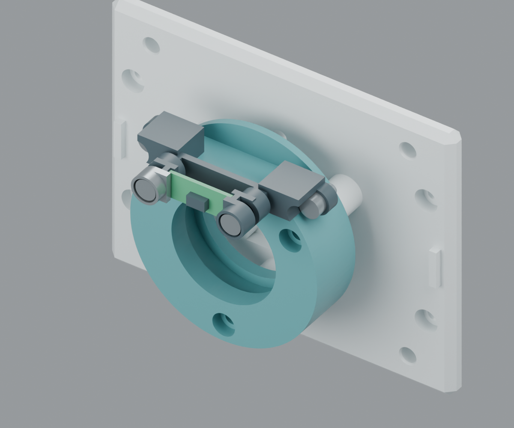
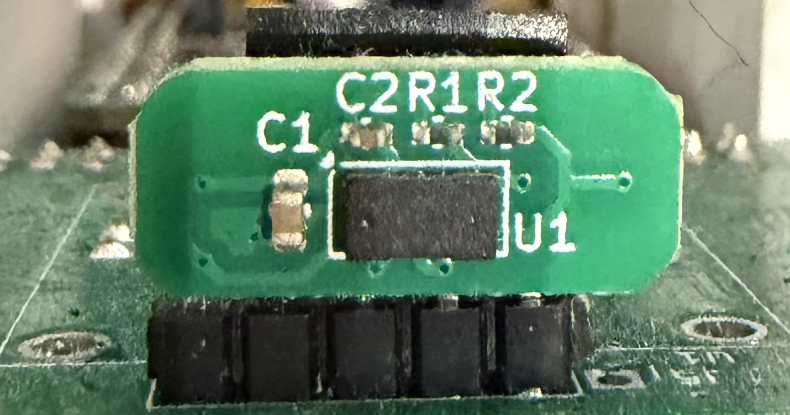
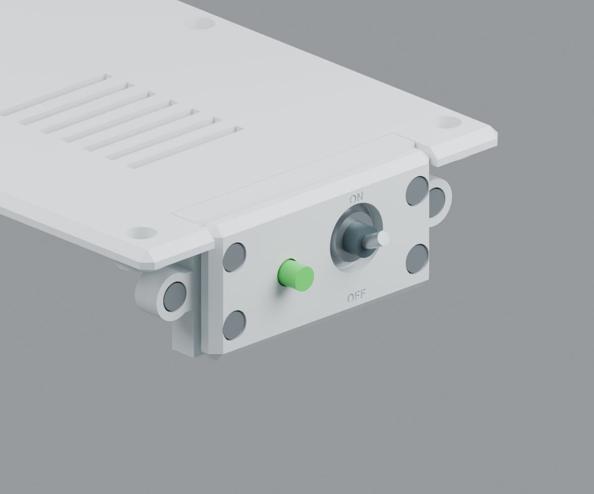

Mechanical enclosure · R16 · 1 October 2026
NIFLS — Joshua Naidoo
Ultra-Link battery cassette beneath the head, uniform grip, capture button, ToF board mount, ON/OFF switch and green power LED for the Prusa MINI+. Print-ready STL files and editable STEP solids.
Verified: 25 watertight STL files; each is one connected mesh and slices successfully in PrusaSlicer 2.9.6. All print dimensions are within 180 mm. The handle has a uniform 45 × 35 mm body. The Ultra-Link sits in a 120 × 94 × 41 mm under-head cassette.
Optical limitation: the specified contact geometry is closer than the standard camera can focus; camera setback or close-focus optical redesign is still required. ToF board pinout, optical centre and actual ranging performance require bench verification.
Final-year project inscription
R16 changes only part 01. Two lines are recessed 0.5 mm into the side opposite the existing name: FINAL YEAR PROJECT • UCT • 2026 / THE FIRST OF MANY.

Short power-cable route and accessible tray screws
R15 adds a direct route above the battery connector and across the roof to the Pi power side. Replace parts 01 and 22; the R14 tray remains compatible. The two 6.2 mm saddle screw access bores are retained. Fit all four M3 × 6 screws with the roof and battery removed, using a 2.5 mm hex key with at least 35 mm of straight reach.

R15 roof cable channel shown with a blue 4 mm clearance envelope. Corners and connector ends are schematic; actual cable bends need fitting. The R14 tray access holes remain below the removable roof.Compact passive-cooled upper body

R10: taller head and high optical assembly.
R13: 33 mm Pi enclosure, optics lowered 28 mm, 74 mm upper-body height. Same camera and scale.
Flush battery cover, lower power panel and 125 mm grip.

Battery cassette with roof, rear cover and side panel hidden. Blue block shows the nominal Ultra-Link casing. The grip is empty except for wiring; connector and wires are not illustrated.
Button service view, with outer pod hidden to show the guided cap and switch cradle.
ToF service view with hood hidden. The board points straight forward, 21.1 mm above the camera axis; the holder accepts the complete 33 × 6 mm filter.Supplied ToF board reference


Rear panel aligned with the Pi housing. Only the switch actuator and LED lens project; metal hardware is illustrative.Individual downloads and print sizes
Dimensions below are X × Y × Z in the supplied print orientation, in millimetres. Use the 33 × 6 mm ringed-filter carrier; print two alignment keys, two nominal button shims and two ToF edge clamps.
| Part | Print dimensions (mm) | Files |
|---|
| 01_pi_base | 120 × 94 × 31 | STL · STEP |
| 02_pi_lid | 120 × 94 × 6 | STL · STEP |
| 03_camera_bulkhead | 74 × 94 × 13 | STL · STEP |
| 04_contact_hood_35mm | 74 × 94 × 51.6 | STL · STEP |
| 05_filter_carrier_zomei_33x6 | 51 × 51 × 9.9 | STL · STEP |
| 06_filter_retainer | 43.5 × 51 × 5.5 | STL · STEP |
| 07_grip_insert_half | 45 × 127 × 19.3 | STL · STEP |
| 08_grip_screw_half | 45 × 127 × 17.5 | STL · STEP |
| 09_angled_saddle | 100 × 42 × 26.423 | STL · STEP |
| 10_alignment_key_print_2 | 10 × 10 × 4 | STL · STEP |
| 11_insert_fit_coupon | 54 × 16 × 8 | STL · STEP |
| 12_button_backplate | 30 × 33 × 7.5 | STL · STEP |
| 13_button_pod | 30 × 33 × 17 | STL · STEP |
| 14_button_cap | 18 × 18 × 6.5 | STL · STEP |
| 15_switch_cradle | 9.8 × 24 × 6.55 | STL · STEP |
| 16_switch_shim_0p4_print_2 | 8 × 8 × 0.4 | STL · STEP |
| 17_tof_cradle | 8.5 × 51 × 18.3 | STL · STEP |
| 18_tof_edge_clamp_print_2 | 7.6 × 7.7 × 4.7 | STL · STEP |
| 19_power_pod | 28 × 77.6 × 6 | STL · STEP |
| 20_power_panel | 28 × 58 × 9 | STL · STEP |
| 21_led_retainer | 21.6 × 7.6 × 7.7 | STL · STEP |
| 22_battery_roof | 120 × 94 × 7.64 | STL · STEP |
| 23_battery_tray | 114 × 94 × 35.16 | STL · STEP |
| 24_battery_rear_cover | 33.06 × 94 × 13.1 | STL · STEP |
| 25_connector_access_cover | 53.4 × 29.46 × 6.7 | STL · STEP |
Assembled STEP · Print verification · Assembly checks · Button travel checks · ToF clearance assumptions
R16 commemorative engraving: only part 01 changes. The USB-port side now reads “FINAL YEAR PROJECT • UCT • 2026” and “THE FIRST OF MANY”, in bold Arial, recessed 0.5 mm. Both lines lie above the port opening and below the lid seam. Existing NIFLS / Joshua Naidoo branding remains on the opposite side. All R15 routing, fasteners and other parts remain compatible.
R15 short-cable route: the power cable now rises directly above the bank connector bay, crosses a shallow channel in the TOP of battery roof 22, then emerges beside the Pi USB-C port through base 01. Reprint 01 and 22; retain the corrected R14 tray 23. The old longer side route remains available for signal wires. Use the 200 mm cable as an overall-length budget, not 200 mm of flexible wire. Its connector bodies and bend radius are unmeasured, so exact fit is not guaranteed.
R14 correction: replace only part 23, the battery tray. Two 6.2 mm access passages now connect the top opening to the previously buried saddle screw counterbores. The four screw seats, mounting centres, interfaces and hardware are unchanged. Use four M3 × 6 screws into saddle 09. Install them before the battery and roof, using a 2.5 mm hex key with at least 35 mm straight reach. The rear cover can also be left off for easier access. Do not use these passages for wiring. Existing R13 parts remain compatible.
R13 fits the complete Zomei 720 nm filter in its metal ring, measured by the user at 33 mm outside diameter × 6 mm total thickness, including the thread. From R12, reprint 04, 05, 06 and 17. Keep the other parts and ToF clamps. Replace the three filter M3 × 10 screws with M3 × 16. This revision has 25 STL files, with one filter-carrier option.
Printable mechanical prototype for the revised specification: Raspberry Pi 4, standard Camera Module 3 NoIR, 33 × 6 mm ringed Zomei 720 nm filter, 35 mm contact hood and passive ventilation. Units are millimetres. Revision date: 29 September 2026. R13 combines the lower optics, a shallow passive-vent Pi cover, flush battery rear cover and 125 mm uniform grip. The user selected passive cooling; there is no 3010 fan provision in this revision.
Compact R13 layout
The Pi housing is 120 × 94 × 33 mm, reduced from 48 mm high. A shallow ventilated cover protects the board. The Pi is shifted 5 mm forward to clear the lowered rear switch and solder space; its PCB underside remains at Z = 12 mm. The conservative 17 mm-high component envelope leaves 0.5 mm nominal clearance to the cover underside. No extra heatsink envelope has been reserved.
The entire camera, filter, hood and ToF assembly is lowered 28 mm. The lens axis is now at Z = -4 mm. The hood and camera bulkhead span Z = -41 to +33 mm, aligned with the combined Pi-and-battery stack. The assembled upper housing/optics height is therefore 74 mm, compared with 102 mm previously. The electronics occupy adjacent spaces; they do not physically overlap. The camera bulkhead is retained; hood and filter holder are revised for the complete filter.
The battery rear cover and power-panel face both remain flush with the Pi base at X = -120 mm. The battery cassette is 120 × 94 × 41 mm. The uniform grip is 45 × 35 × 125 mm, 15 mm shorter than R9, with about 90 mm below the capture pod. Its 105° angle and corner treatment are retained.
From R9, replace 01, 02, 07, 08, 22, 23 and 24 with this set. From the intermediate R10 model, 01, 02, 04, 05, 06, 17 and 23 change printed geometry. The power-panel components remain unchanged. The six main cover screws now use M3 × 6, replacing M3 × 8. The four battery rear-cover screws also use M3 × 6, replacing R9's M3 × 12. Do not use longer screws in the new blind seats.
This is the user-selected passive-cooling version. There are side intakes and roof exhaust slots, but no fan mount or thermal-performance guarantee. Test the enclosed Pi under the actual camera and processing workload, logging temperature, throttling and undervoltage over the longest intended scan session and expected ambient conditions. If cooling is inadequate, increase cooling space or restore an active-cooling layout before use. R10 remains a separate taller model with the earlier fan provision.
Lowering the camera does not change its lens-to-contact distance: X positions are unchanged. The existing close-focus limitation remains unresolved. This revision is a compact mechanical enclosure, not a validated optical or medical device.
Open and print
Import individual files from STL/ into PrusaSlicer at 100% scale. Their flat exterior reference faces are already on Z=0. Each fits the Prusa MINI+ 180 × 180 × 180 mm envelope. Select the actual MINI+ printer and filament profile before slicing.
Print one each of parts 01–09, using the part 05 Zomei filter carrier. Print two copies of part 10 alignment key. Part 11 is an insert calibration coupon. Print one each of parts 12–15 and 17, two part 16 button shims, and two part 18 ToF edge clamps. Print one each of parts 19–21 (power controls) and parts 22–25 (battery roof, tray, rear cover and flush connector access cover). The assembled STEP is for inspection/editing; use the separate STL files for printing. Separate editable STEP parts are also supplied in their print orientations.
Starting settings: 0.4 mm nozzle, 0.20 mm layers, four perimeters, five top/bottom layers and 20% infill. Use opaque black PLA for the optical hood. The grip body is uniformly 45 × 35 × 125 mm, with 2 mm top register tabs. The cassette roof and tray each occupy a 120 × 94 mm footprint; the rear and connector covers are printed separately. Each half prints on its broad outer side; see exact print dimensions below. Flat print orientations are supplied. Use local supports beneath the ToF cradle mounting ears; keep supports off its PCB seats and insert bores. Inspect horizontal hole roofs and bridges in the slicer preview. No printer-ready G-code is supplied.
Flush rear power panel in the lower body
The same printed panel and internal frame are lowered 15 mm to fit the shorter head. The switch centre is now Y = -8, Z = 21 mm; the LED is Y = 10, Z = 19 mm. Their face remains X = -120 mm. Only the purchased lever and LED lens project. Nominal body, solder and lead envelopes clear the forward-shifted Pi; verify actual insulated joints and flexible bends.
Install the two frame-mounting inserts in the main base, rather than the old tall lid. Fit four inserts in the frame. With the panel removed, fix the frame using two M3 × 6 screws. Fit the switch, LED and retainer to the panel and wire a service loop into the head. Engage the locating tabs and close with four M3 × 6 screws. The LED retainer uses two M3 × 6 screws. Keep wires clear of the Pi and the shallow cover. The microSD card is serviced with the power panel or head cover removed; an unobstructed external card slot is not claimed in this compact layout.
Ultra-Link battery layout retained from R8
The Ultra-Link UL-PB560A is mounted horizontally beneath the head, with the output on its long edge facing the removable side panel. The nominal casing is 77.2 × 35 × 24.7 mm. The revised main grip is: 45 × 35 × 125 mm, with a 105° angle, rounded corners and no battery bulge. The capture pod remains at the upper front.
The assembled Ultra-Link cassette is now 120 × 94 × 41 mm; the Belkin R7 cassette is 190 × 110 × 41 mm. This cassette is therefore 70 mm shorter and 16 mm narrower, with the same height. The full-length upper housing is still limited by the Pi enclosure and optical hood. The battery body pocket and side-output allowance retain their R8 locations. R7 remains available as a separate Belkin version.
The cassette uses parts 22–25. Use the R10 roof, tray and rear cover together; the R8/R9 side connector access cover remains compatible.
The body pocket has 0.3 mm clearance per face. The rear portion extends past the body for access; the two padded cover stops set its axial position. The battery is offset across the cassette width to make room for its side-projecting connector. A 30 mm-long side bay is centred on the nominal output position, with 27.5 mm reserved beyond the battery edge for the fixed plug and a compact female USB-C extension connector. Additional clearance leads to the removable flush side panel. This is an allowance, not a measurement of the actual connector: confirm its position, protective cap/tether, adapter size and cable bend before full printing.
Use a suitable short USB-C female-to-male power extension/harness, rated for at least the required 5 V / 3 A supply, with working USB-C configuration connections. The female end mates with the fixed plug; the male end reaches the Pi. The separate bank socket is a charging input, not an assumed output. The existing rear toggle still requires a properly configured switched harness; an ordinary unmodified extension bypasses that switch.
The side cover provides direct access for connecting or disconnecting the plug. Install the battery from above with the roof off; its fixed plug prevents sliding the battery through the narrow rear body opening. For complete battery removal, open the head to reach its four base mounting screws, disconnect and lift the head assembly, remove the four roof screws, then unplug and lift the bank. The rear cover provides access toward the bank's end socket for charging; confirm the real socket position and orientation. This version does not offer the Belkin version's straight rearward battery removal.
Fit soft insulating pads to the two rear-cover stops, compressed to approximately 0.3 mm. They contact two 6 × 4 mm lower-corner casing patches; verify these are clear of ports and controls. Use an insulating cable anchor in the side bay to avoid loading the built-in plug. Route the short power cable through the new roof-top channel described above. The original 5.5 mm-wide side lane remains available for other leads. Signal leads from the grip use a separate 2.2 mm-high under-floor passage. The wire lane is separated from the side-cover insert seats and the new screw-access bores.
Mechanical design
- Head: 120 × 94 × 33 mm assembled, split into base and lid. M2.5 mounting centres are 58 × 49 mm. PCB underside datum is 12 mm above the head underside. The interior clears the specified 85.6 × 56.5 × 17 mm envelope.
- Pi access: one generous recessed side service opening for USB-C and both micro-HDMI plugs; microSD service access after opening the enclosure; side intake vents; CPU/RAM roof vents; 16.6 × 3.6 mm FFC passage.
- Cooling: passive side intake and roof exhaust only. The shallow cover has no 3010 fan mount. Check temperatures and throttling under the intended workload.
- Camera: four M2 posts on 21 × 12.5 mm centres, offset to the actual lens axis. Board back is at assembly X=6.5 mm. The recess clears the rear components and autofocus assembly. FFC exits upward toward the matched bulkhead/head passage.
- Filter: a non-threaded 33.6 mm diameter pocket, 0.3 mm radial clearance per side. Rear shoulder X=16.3, retainer underside X=22.9, giving 6.6 mm axial space. Seat the complete 6 mm filter between two annular compliant pads compressed to 0.3 mm each; nominal metal-ring envelope X=16.6–22.6. Pads approximately 33 mm OD / 28.5 mm ID, contacting only the metal ring; trim to the actual bearing surfaces. Do not clamp onto the glass or remove the metal ring. The thread is received as part of the measured envelope, not engaged by printed threads. The 28.5 mm clear aperture is unchanged; check the actual ring clear opening and image corners.
- Hood: 64 mm clear bore; contact rim X=57.6 is 35 mm past the front of the metal ring at X=22.6. The actual glass plane is inside the ring and has not been measured, so glass-to-rim distance is at least 35 mm. The 3 mm gasket land remains 64 mm ID / 70 mm OD. Hood length increases 4.6 mm.
- Grip: 45 × 35 × 125 mm main body, 5 mm corner radii, constant section except end chamfers and the retained capture pod. The empty wiring cavity is 24 × 20 mm; six recessed M3 screws close the two halves.
- Wiring: battery power stays in the cassette and head. Only the capture-button leads use the handle and saddle. The side lane is 5.5 mm wide; its roof crossing is 4.14 mm deep. The separate under-floor signal passage is 2.2 mm high, with at least 2.8 mm of material above and below it away from the intentional entry holes.
- Interlocks: grip rails, main case tongues, hood register tabs and two loose saddle/head keys. Their receiving features have 0.3 mm clearance per mating side.
- ToF routing: a new matched 4 mm passage at assembly Y=0, Z=14 mm runs through the bulkhead and head front into the Pi compartment. Route leads over the filter carrier, then down behind it to this passage; secure them away from the camera ribbon and electronics.
- Branding: NIFLS - Joshua Naidoo, Arial Bold, 0.5 mm recessed, on the main base side. Major enclosure edges have 2 mm chamfers. Small fastener details and functional mating edges retain their necessary dimensions; the 3 mm gasket land remains flat.
ON/OFF switch and power LED
Reference parts: C&K 7101MYZQE, a maintained two-position SPDT toggle with the short M actuator, Y threaded bushing and solder lugs; Kingbright WP7113SGC, a 5 mm green through-hole LED. The switch is used as ON/OFF by leaving one throw unconnected. Do not substitute the low-current gold-contact switch option for direct supply switching. The specified Q contacts are rated 5 A at 28 V DC; the complete power path and supply still need to support the actual Pi load.
The toggle centre is assembly Y=-8, Z=21 mm and faces rearward. A 6.95 mm bushing hole, recessed nut pocket and 3 mm mounting web support its 6.35 mm threaded bushing. The rear body cradle provides a 7.46 × 13.30 mm opening around the nominal switch body. Orient the lever vertically and use the supplied switch nut and suitable locking washer. Do not use a panel locking-ring locating pin without its matching hole; the printed body cradle supplies rotation restraint. ON/OFF legends are recessed 0.5 mm.
The LED centre is Y=10, Z=19 mm, beside the switch. The bore is 5.6 mm, with a 6.5 mm flange pocket. Insert the LED from inside the panel. Confirm that its flange catches the finished shoulder; do not enlarge the 5.6 mm bore when deburring. Fit the printed retainer behind its flange with a soft annular pad approximately 5.8 mm OD / 4.2 mm ID, compressed to about 0.3 mm. The retainer seats against the panel; it must not crush the LED. Its central opening passes the two insulated leads. Adjust pad thickness to the actual flange so the lamp is held without axial play. The lens projects about 4.6 mm beyond the panel at nominal dimensions.
Assembly and printing: follow the R9 frame/panel sequence above. Print the frame on its interior-facing flat face, the panel on its exterior face, and the retainer on its rear face, as supplied. Clear short hole bridges and recesses before assembly. Install inserts before fitting electronics. The ON/OFF legends remain recessed 0.5 mm. Purchased switch and LED installation details above still apply.
Power wiring and operation
This is a manual 5 V supply disconnect, not an automatic safe-shutdown controller. It switches the regulated power-bank output feeding the Pi; do not open or modify the bank's internal battery wiring. Shut down Raspberry Pi OS and wait for shutdown to complete before moving the toggle to OFF. The green LED can remain on after software shutdown because it indicates supply power. It does not indicate that the scanner is ready or that storage writes have finished.
Connection plan: regulated +5 V from the bank → toggle common terminal 2 → the throw that closes with the lever toward the engraved ON → Pi USB-C +5 V input. Insulate the unused throw separately. Verify the selected terminals with a continuity meter before connecting the Pi. Ground remains continuous between bank, Pi and LED. Use a correctly rated 5 V USB power harness/breakout that preserves the necessary USB-C configuration connections; switch all VBUS conductors together. Do not infer pin functions from wire colour, and do not disconnect only one of several parallel VBUS wires. No particular USB breakout PCB is mounted in this model.
For the LED, connect switched +5 V → 1 kΩ, 0.25 W resistor → LED anode; LED cathode → ground. At the LED's typical 2.2 V forward drop this gives approximately 2.8 mA from 5 V. Confirm polarity from the manufacturer's drawing or a diode test. The resistor is mandatory. Solder and individually insulate joints outside the printed panel; keep the first lead bend at least 3 mm from the LED base. Secure the insulated resistor and a service loop in the free pod space with a small insulating adhesive tie anchor; do not leave bare conductors or let wires pull on the lamp.
Use short flexible supply leads and connectors rated for at least the required Pi current; 20 AWG copper is a starting choice for short internal extensions. Verify voltage at the Pi under the intended camera/processing load, switch heating, stable power-up and LED extinguishing when OFF. Disconnect any alternate power sources during this check. Some power banks require their own wake button after load removal: verify automatic restart with this Ultra-Link bank before closing the battery cover. This external switch does not disable the bank's internal electronics. Neither an automatic shutdown board nor shutdown firmware is supplied.
Extra R4 hardware: eight M3 × 6 socket-head screws, eight OD 4.6 × 4 mm M3 inserts, one specified toggle with mounting nut/washer, one specified LED, one 1 kΩ resistor, a small compliant LED pad, insulated wiring, heat-shrink and an insulating wire anchor. The full totals below include the added screws and inserts.
Capture button
A 23 × 33 × 30 mm graphite pod replaces the projecting trigger assembly. The circular cap is 14 mm diameter, with its face 1 mm recessed below the pod front. A rear skirt and front bore guide it perpendicular to the grip front, 15° from the barrel axis. The flange has a 0.7 mm fixed mechanical stroke; the housing carries excess push force. The Panasonic switch's internal spring returns the lightweight cap; no separate metal spring, pivot or trigger stop screw is used.
The reference switch remains Panasonic EVQP0E07K. The cradle clears its 6.2 × 6.2 mm square base, with 0.3 mm clearance per side. Two thin compliant adhesive pads, approximately 6 × 2 mm, compressed to 0.3 mm each, retain the lower square casing. Keep the raised actuator free. The enclosed cap also limits forward escape of the switch body. The PCB terminal solder wells are 3 mm diameter; insulate both joints and route thin flexible leads through the new grip entry bore and upper wiring chamber.
The supplied 0.4 mm shims are nominal starting spacers: print two and fit one beneath each cradle screw. For adjustment, replace them with equally thick measured PET/polyester or metal shim washers in approximately 0.1 mm increments. Practical adjustment range is 0–0.8 mm total shim thickness. The actual switch determines the final thickness.
Bench calibration: with the pod assembled and a continuity meter connected, verify that the switch is released at rest and closes approximately 0.10–0.15 mm before the cap reaches its mechanical stop. Measure this using a depth gauge or dial indicator. Add equal shim thickness beneath both cradle mounts to make actuation occur earlier; reduce thickness if it occurs too early or remains closed at rest. Do not exceed the switch's permitted travel. The manufacturer specifies pretravel ≤0.5 mm and guaranteed overtravel ≥0.2 mm. Confirm clean return repeatedly and with the scanner pointed up, down and sideways. Smooth the sliding surfaces if required; the digital motion check does not establish real printed friction.
ToF board mount
The mount uses the user's measured 17 × 7 × 1 mm PCB. It does not interpret 1 mm as the populated assembly thickness. The cradle has 17.6 mm between its end fences, and padded end clamps provide a 1.6 mm axial PCB space, including the two 0.3 mm pads. Only the short PCB edges are gripped; the long-edge connector regions and central optical face remain open. No mounting holes are assumed or drilled in the board.
The board is inside the upper hood, centred at assembly X=37, Y=0, Z=17.1 mm, pointing straight forward, parallel to the camera. It looks past the camera filter, directly into the contact opening. The hood carries two mounting bosses; two M3 screws hold the removable cradle and two more hold its end clamps. Print both clamps from the same STL and rotate one 180° about the PCB normal for the opposite end.
Explicit clearance allowances, measured from the PCB rear plane: 6 mm rear depth for connectors/components over a 14.8 × 13 mm region, and 3 mm forward component height over a 14.8 × 6.4 mm region. Compare these allowances to your actual connectors before printing the full hood. Edge seats assume about 0.8 mm of usable, component-free land at the two short board ends. Fit thin insulating pads at those seats and tighten only until the clamp fences seat; do not bow the PCB.
The hood has a longer internal relief that retains at least 2.8 mm nominal tube wall there. The new pocket holds the complete metal-ring filter. The 28.5 mm printed clear aperture and 3 mm gasket land are retained; the rim is 35 mm beyond the front of the metal ring. The filter carrier/retainer have an upper relief and three filter fasteners at angles 270°, 30° and 150° around the optical axis.
The photo does not establish the chip model or pinout. UCT Micromouse documentation lists VL53L0X sensors, which is a useful lead rather than confirmation of this board. Verify the board supply voltage, connector pin order and interface pull-ups before connecting it to the Pi. No unverified ToF pin assignments are supplied.
The mechanical clearance check uses a hypothetical 25° full viewing cone with a 4 mm aperture, centred on the PCB at an assumed 4 mm forward optical face. This cone clears the enclosure and reaches the contact plane at approximately 16.6 mm axial range, at assembly Y=0, Z=17.1 mm. Actual optical centre, field of view, minimum usable range and reflectance performance remain unverified.
The assumed sensor centreline stays 21.1 mm above the camera axis. The ToF cradle is moved 5 mm forward to clear the thicker retainer and connector allowance; its rear crossbar has 0.6 mm axial clearance from the retainer. For a flat phantom perpendicular to the barrel, nominal camera distance = sensor range + 26.4 mm. Calibrate with actual optical centres and compressed contact gasket. Camera field of view and ToF operation need a physical check; this is not an optical-performance validation.
No cover glass is placed in front of the ToF apertures. If the board is VL53L0X, its emitter is at 940 nm; measure distance first and stop ranging during camera exposures if testing reveals interference. A 720 nm filter may transmit this light. A future protective window requires a sensor-specific optical design and calibration.
Hardware
Use M3 socket-head cap screws, with lengths measured under the head. Longer substitutes can bottom in the blind insert seats.
- M3 × 6: 39 — two bulkhead/Pi-base, two bulkhead/battery-tray, four hood/bulkhead, three button/grip, two switch cradle, two ToF cradle/hood, two ToF end clamps, eight power-frame/panel/LED fasteners, four tray/saddle screws and four battery rear-cover screws and six shallow head-cover screws.
- M3 × 8: 12 — four head/battery-roof, four battery roof/tray and four connector access cover.
- M3 × 10: 4 — four saddle/grip.
- M3 × 16: 13 — six grip clamshell, four button pod and three filter retainer.
- M3 heat-set inserts, 4.6 mm OD × 4.0 mm long: 68.
- M2.5 × 12 screws and M2.5 hex nuts: 4 each — Raspberry Pi mounting. Nut recesses are 5.6 mm across flats.
- M2 × 5 screws: 4 — camera. Carefully tap the 1.7 mm printed pilot holes M2 before fitting the board; no M3 hardware is forced through camera holes.
- Soft opaque contact gasket: annulus 64 mm ID / 70 mm OD, typically 1–2 mm thick; adhesive compatible with your print and phantom.
- Panasonic EVQP0E07K momentary switch; two insulated signal leads; 10 kΩ pull-up resistor; two nominal 0.4 mm button shims plus measured fine shims for calibration.
- Four thin electrically insulating ToF edge pads, compressed to approximately 0.3 mm, plus two similar pads for the button switch.
- Thin soft filter retention pad as specified above; standard 15-pin camera cable; suitable USB-C female-to-male power harness with a Pi USB-C plug.
The nominal insert pilot is 4.2 mm diameter × 4.5 mm depth, with a 4.8 mm entry taper. This is intentionally an interference fit, so the general +0.3 mm component clearance does not apply. Print the coupon first: it contains 4.0, 4.2, 4.4 and 4.6 mm pilots. Select the fit and installation temperature recommended for your exact insert and material, and adjust the CAD/reaming if necessary. M3 clearance holes are 3.6 mm; socket-head recesses are 6.2 mm diameter.
Assembly sequence
1. Print and check the insert coupon. Print the required parts. Clear holes and remove burrs. Install inserts and prepare camera threads before introducing electronics or the battery.
2. Assemble the wiring-only grip with six M3 × 16 screws. Pass the capture leads through its upper throat. Attach the saddle using four M3 × 10 screws, with the grip register tabs engaged.
3. With the battery tray empty, feed the button leads through its floor entry and side riser. Bolt the saddle to the tray from inside using four M3 × 6 screws. These heads must remain below the battery floor. Route the power cable directly upward at the connector bay and into the new roof-top channel, leaving its Pi end at the power-side exit.
4. With the roof off, lower the bank into its pocket with its fixed output in the side bay. Connect and strain-relieve the extension through the open side access. Close the roof with four M3 × 8 screws. Seat the four Pi nuts from below before fitting the head. Fit both alignment keys and attach the head base with four M3 × 8 screws. Fit the padded rear cover using four M3 × 6 screws and the flush side panel using four M3 × 8 screws. Verify the protective cap, plug and wires are not trapped.
5. With the nuts already seated, mount the Pi using M2.5 × 12 screws. Route the power lead in the space below/beside the Pi to USB-C; keep it clear of the vents and case fasteners.
6. Connect the camera ribbon at the Pi and route it toward the lowered front passage at Z = 6.8–10.4 mm. This passage runs below the PCB; leave a smooth loop around the board edge and check the actual ribbon connector and bend before closing. Route ToF leads through the separate port at Z = 14 mm.
7. Mount the camera on its unchanged bulkhead using four M2 × 5 screws and connect the ribbon. Close the shallow cover using six M3 × 6 screws. Mount the optical bulkhead in its lowered position: two M3 × 6 screws attach it to the Pi base at Z = 13 mm, and two attach it to the battery tray at Z = -21 mm. Keep light-sealing foam clear of the ribbon and vents.
8. Fit the 33 × 6 mm filter carrier, rear pad, complete ringed filter, front pad and retainer. Use three M3 × 16 screws into the bulkhead towers. Tighten evenly until the retainer seats on the carrier; pads should retain the metal ring without loading the glass. Verify the glass and autofocus lens do not touch.
9. Slide the hood over the optical assembly and onto its registers. Secure with four M3 × 6 screws. Adhere the soft gasket to the front 3 mm annular land.
10. Install the ToF cradle inserts before electronics. Solder/insulate its leads according to a verified board pinout, seat the board on its two rear pads and fit the two padded end clamps with M3 × 6 screws. Fit the cradle to the new hood bosses using two M3 × 6 screws. Route the lead bundle above and behind the filter carrier through the new port before final hood assembly. Inspect that no lead crosses either optical path.
11. Fasten the button backplate to the upper front of the R8 grip using three M3 × 6 screws. Install the padded switch in its cradle, feeding its insulated terminals through the two rear wells. Fit equal shims and mount the cradle with two M3 × 6 screws. Insert the cap into the pod from the rear, then attach the pod with four M3 × 16 screws. Perform the button calibration above. Remove the pod for shim changes, then repeat the check after final tightening.
12. Check cable strain, battery retention, autofocus movement, thermal behaviour, light leakage and image quality on the actual phantom before use.
Button wiring and capture behaviour
With the Pi powered off, wire one switch terminal to BCM GPIO17, physical header pin 11, and the other to GND, physical pin 9. Connect a 10 kΩ resistor from the GPIO/switch junction to 3.3 V, physical pin 1. The switch terminals have no polarity. An optional 1 kΩ series resistor may go between the GPIO pin and the junction containing the switch and pull-up; this limits current if software accidentally configures the pin as an output. Configure GPIO17 as an input, disable its pull-down, and verify that no other peripheral uses it. Released reads high; pressed reads low. Pi GPIO inputs use 3.3 V: do not connect this signal to 5 V. Official Raspberry Pi GPIO documentation and header diagram
Suggested software behavior: require approximately 30 ms of stable input to accept a press; request one acquisition; wait for the intended illumination, exposure and focus to stabilize; capture once; then require a stable release before rearming. Ignore presses during an acquisition. This sequence is a design recommendation, not supplied firmware. Keep this capture button separate from Pi power switching and any illumination driver.
Optical limitation and assumptions
This model preserves the requested short contact hood and filter directly in front of the lens. It places a contacting phantom approximately 43 mm from the lens, plus compressed gasket thickness. The standard Camera Module 3 has a published minimum focus distance of approximately 100 mm. Therefore an unmodified camera cannot be assumed to produce a focused contact image. Contact operation requires a verified close-focus modification or optical redesign; the filter itself does not provide this correction. No macro optic has been dimensioned or included in this enclosure.
The filter holder now uses the confirmed 33 × 6 mm complete filter envelope. Its mounting thread and glass location are not assumed from the 30.5 mm product label. Trial-fit the filter holder and pads before printing the full enclosure. The battery connector still requires a physical fit check.
This is a mechanically checked enclosure prototype. No physical print, insertion trial, load test, thermal test, optical calibration, light-transmission measurement or medical-device validation has been performed. Opaque visible appearance alone does not prove near-infrared light-tightness; verify the chosen PLA and gasket against the intended illumination.
Verification and source files
Suggested next work: first resolve the camera focus/working-distance issue below; then select controlled IR illumination and its driver/heat path. The new green LED indicates switched power. A separate software-ready/capture indication and a lanyard attachment could be considered later. Their component sizes and locations should be chosen before making additional holes or mounts.
part_manifest.json records exact CAD dimensions and solid checks. print_validation.json records mesh checks and PrusaSlicer 2.9.6 test slicing on a 180 mm bed. assembly_validation.json records CAD intersection checks against the modelled component and hardware envelopes. button_validation.json checks cap travel. tof_validation.json checks the stated hypothetical ToF viewing cone and records the geometric range offset. Rendered previews use the actual exported geometry; colours and the reference glass are illustrative.
source/ contains the editable CadQuery builders. Requires Python 3.12 and CadQuery 2.8.0. Run build_scanner.py from that folder to regenerate models into generated_models/. The editable STEP files can also be used without these source dependencies.
Primary references:
Previous R14 verification includes screw-head insertion sweeps through all four tray holes, unchanged seat geometry, assembly interference and slicing of the changed tray. Unchanged parts retain the R13 print checks. Overall assembly pictures are from R13; the dedicated tray image shows R14. The shorter 3 mm inserts purchased by the user remain a physical-test substitution; R14 does not change the insert pockets or claim a validated strength rating.
Installing the short cable
With power disconnected, connect the female end to the bank and bring its cable upward through the large roof opening above the connector bay. Lay the flexible section into the 8 mm-wide, 4.8 mm-deep top channel in roof 22. Keep it clear of the two alignment-key pockets and all screw holes. Route it out at the opposite side, alongside the Pi USB-C service opening. Fit base 01 only after checking that the cable sits fully below the roof mating face. Then fit the Pi and connect the male plug. A straight plug may project through the side opening; a large moulding or stiff cable may not fit this assumed envelope. No cable or plug should be forced into a tight bend.
The roof channel centreline is approximately 81.6 mm long. This is only the guided crossing, not the complete cable requirement. The 200 mm total must also accommodate both connectors, the bank-side upward turn, the Pi-side turn and slack. The channel was checked with a 4 mm cable envelope; the actual cable must fit without being pinched. The supplied cable alone does not wire the rear ON/OFF switch: that still requires the separate correctly configured switched harness described above.
The nominal clearance path from the assumed cable departure in the bank connector bay to the Pi-side approach is 116.6 mm, including the 81.6 mm roof crossing. This leaves 83.4 mm of a 200 mm total length for actual connectors, rounded bends and slack. These are assumptions to check against the real cable, not a measured fit guarantee. The path preview shows an illustrative 4 mm-diameter cable envelope with simplified corners. The enclosure can be assembled around the cable, so the male plug need not be threaded through the shallow channel.
R16 is a cosmetic material-removal change. Its base is re-sliced; prior assembly and route checks are retained from R15. The commemorative preview shows R16; other illustrations show earlier compatible revisions.